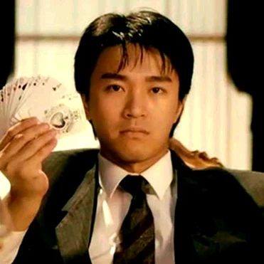

CHÂU TINH TRÌ
account_boxTHÔNG TIN
Đạo diễn, nhà biên kịch, nhà sản xuất
- Phim hay nhất cho phim Tuyệt đỉnh Kungfu
- Đạo diễn xuất sắc nhất cho phim Đội bóng Thiếu Lâm
- Diễn viên nam chính xuất sắc nhất cho vai A Tinh trong Đội bóng Thiếu Lâm
schoolĐÀO TẠO
Tốt nghiệp lớp diễn viên của hãng TVB năm 1982, Châu Tinh Trì gia nhập làng giải trí với vai trò MC và nhiều vai diễn phụ, thậm chí ông còn phải quỳ gối xin đạo diễn để được diễn lại vai của mình, nhiều người còn cho rằng ông không có thực lực và tương lai, bộ phim Vua hài kịch năm 1999 là tiếng lòng của ông về những trải nghiệm nghề trong thời gian này. Dù hơn 5 năm lận đận, nhạt nhòa vai phụ nhưng diễn xuất của Châu Tinh Trì được đánh giá cao, ông luôn đạt giải thưởng Kim Mã cho vai phụ xuất sắc nhất, "Diễn viên phụ xuất sắc nhất Hồng Kông", "Gương mặt mới xuất sắc nhất Hồng Kông", ...
assignmentKINH NGHIỆM
Từ năm 1994, Châu đã bắt đầu tự viết kịch bản và đạo diễn cho một số bộ phim. Bộ phim Đội bóng Thiếu Lâm đã phá vỡ kỷ lục doanh thu tại Hồng Kông năm 2001, kỷ lục này lại tiếp tục bị vượt qua bởi bộ phim tiếp theo của Châu là Tuyệt đỉnh Kungfu năm 2004. Năm 2008, sau bộ phim CJ7, Châu tạm ngừng sự nghiệp diễn xuất (nguyên nhân chính được cho chính ông thường thu hút sự chú ý của khán giả quá mức dù cho ông đã chủ đích vào vai phụ) để chuyên tâm vào sự nghiệp đạo diễn. Tháng 7 năm 2006, Châu bắt đầu làm bộ phim mới nhất của ông là CJ7/A Hope (Trường Giang số 7) tại Ninh Ba, Chiết Giang. Có nguồn tin cho rằng đây là bộ phim Trung Quốc có kinh phí cao nhất từ trước đến nay, khoảng 100 triệu Nhân dân tệ (khoảng 13 triệu USD).[3]. Năm 2016, Châu Tinh Trì ra mắt công chúng bộ phim Mỹ nhân ngư với vai trò đạo diễn kiêm sản xuất và biên kịch. Bộ phim đạt được thành công lớn về mặt doanh thu (hơn 500 triệu USD) cũng như được lòng phần lớn nhà phê bình nghệ thuật.
accessibilityKỸ NĂNG
Chính Châu Tinh Trì là người đã khuyên Lương Triều Vĩ tham gia vào ngành công nghiệp giải trí, để rồi sau đó Lương Triều Vĩ thậm chí còn trở nên nổi tiếng trước cả Châu Tinh Trì. Các phim của Châu thường có một vai diễn nhỏ là một người đàn ông xấu xí giả gái vừa chạy vừa ngoáy mũi, vai diễn này luôn do một người bạn của Châu tên là Lý Kiện Nhân (Lee Kin Yan) thủ vai. Châu Tinh Trì rất hâm mộ bộ truyện tranh Nhật Bản Bảy viên ngọc rồng. Do đó, anh không ngần ngại tham gia sản xuất phim Dragonball Evolution của điện ảnh Hoa Kỳ.
favoriteSỞ THÍCH
Khi còn nhỏ, Châu rất thích Kung fu nhưng phải học võ qua truyền hình vì cha mẹ ông không đủ tiền cho con theo học các lớp chính quy. Sau đó thì ông theo học Vịnh Xuân quyền và trở thành một người hâm mộ diễn viên Lý Tiểu Long. Cho đến tận ngày nay ông vẫn giữ niềm đam mê này và những bộ phim của Châu Tinh Trì thường có những cảnh gợi nhớ đến những tác phẩm Lý Tiểu Long tham gia diễn xuất. Cụ thể trong bộ phim Tuyệt đỉnh Kungfu của mình, Châu Tinh Trì đã mượn chiếc quần của Lý Tiểu Long từ người con gái của họ Lý. Nhiều động tác võ thuật và phong cách trình diễn được Châu Tinh Trì thể hiện lấy cảm hứng từ Lý Tiểu Long.
languageNGOẠI NGỮ
Tiếng Anh
| Nghe | |
| Nói | |
| Đọc | |
| Viết |
computerTIN HỌC
| MS Word | starstarstarstarstar |
| MS Excell | starstarstarstarstar_half |
| MS Power Point | starstarstarstarstar_half |
| MS Outlook | starstarstarstarstar_border |